Sphere
Go to Surface Area or Volume.
Sphere Facts
Notice these interesting things:
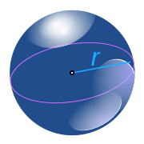
- It is perfectly symmetrical
- All points on the surface
are the
same distance "r" from the center - It has no edges or
vertices (corners) - It has one surface
(not a "face" as it isn't flat) - It is not a polyhedron
Glass Sphere.
Balls and marbles are shaped like spheres.
You can spin or drag this sphere:
Largest Volume for Smallest Surface
Of all the shapes, a sphere has the smallest surface area for a volume. Or put another way it can contain the greatest volume for a fixed surface area.
Example: if you blow up a balloon it naturally forms a sphere because it is trying to hold as much air as possible with as small a surface as possible. Press the Play button to see.
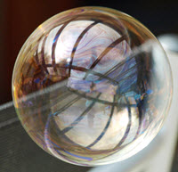
In Nature
The sphere appears in nature when a surface wants to be as small as possible. Examples include bubbles and water drops. Can you think of more?
Volume and Surface Area
Surface Area = 4 × π × r2
Example: r = 5
Volume = (4/3) × π × r3
Example: r = 5
Try dragging point "A":
Also see Volume and Area of a Sphere Calculator
Spheroid
The EarthThe Planet Earth, our home, is nearly a sphere, except that it is squashed a little at the poles. |
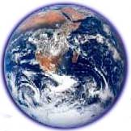 | So it is technically a spheroid, but a very mild version of one. |
|
Here is a more extreme spheroid: 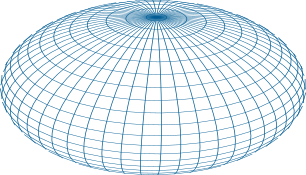 |
||
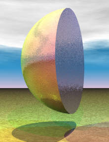
Hemisphere
A hemisphere is an exact half of a sphere.
Other Cool Spheres
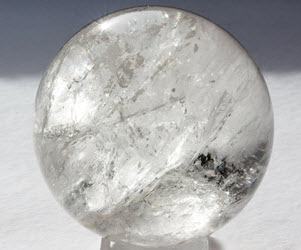
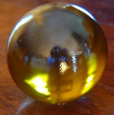
| 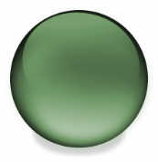 | 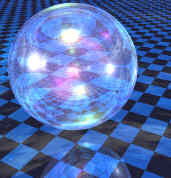 |
| 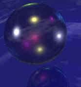 | 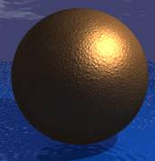 |